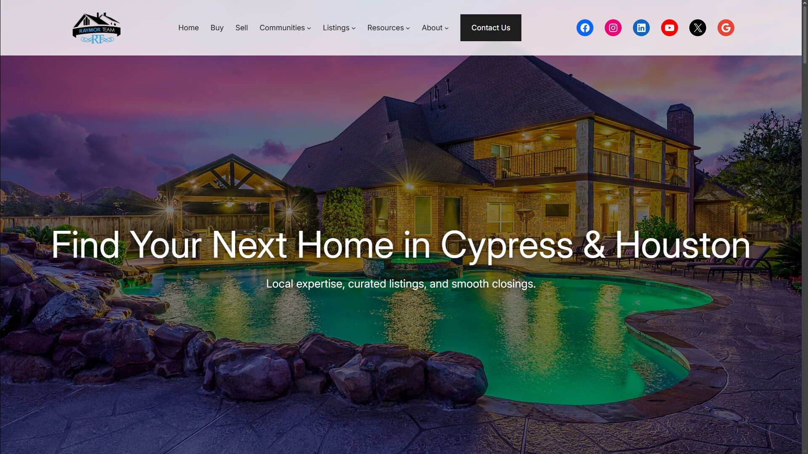

Raymor Team Real Estate Website

I designed and developed the Raymor Team website as a WordPress-based real estate site focused on helping buyers and sellers in Cypress and Houston navigate listings and contact the team.
The project was built around clear local messaging, strong trust signals, mobile-friendly layouts, and a structure that supports lead generation for a working real estate business.
For this project, I worked on website design and layout refinement, WordPress implementation, content presentation, and overall user experience.
A major goal was making the site feel professional and easy to use while keeping the browsing experience clean for visitors looking for homes, market information, or agent details.
This project is a strong example of the kind of client-facing website work I enjoy: combining development, design thinking, branding, and practical business goals into one polished web experience.
View live website